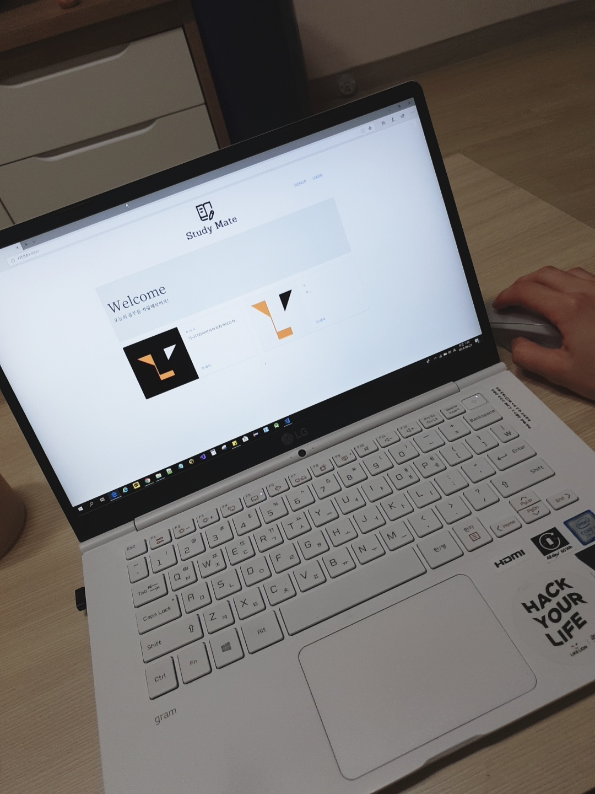

My First Project
멋쟁이 사자처럼 7기로 활동하게 된 배유림 입니다
자기소개
동덕여자대학교 컴퓨터학과 3학년 재학 중인 배유림 입니다!
웹 프로그래밍 수업은 몇 차례 들었지만 직접 개발하는 것은 처음이라 열심히 배우고 있어요ㅎㅎ
활동 막바지에 제가 개발한 실용적인 웹 페이지를 꼭 만들고 싶습니다 파이팅!!

만들고 싶은 웹 서비스
Study Mate
Study Mate
사실 과제를 착각해서ㅜㅜ 이미 다 만들었긴 했지만 만들고 싶은 웹 서비스는 'Study Mate', 즉 함께 공부하고 공부한 것을 공유하며 서로 피드백을 해줄 수 있는 서비스입니다. 로그인 후에야 새 게시글을 쓸 수 있고 작성한 계정만이 게시글의 수정 및 삭제가 가능합니다. 댓글 또한 마찬가지입니다. 페이지에 로그인 한 사용자들은 게시글에 있는 사용자들의 그날의 공부인증 내용을 보고 응원도 할 수 있고 모르는 부분에 피드백을 해줄 수 있습니다.